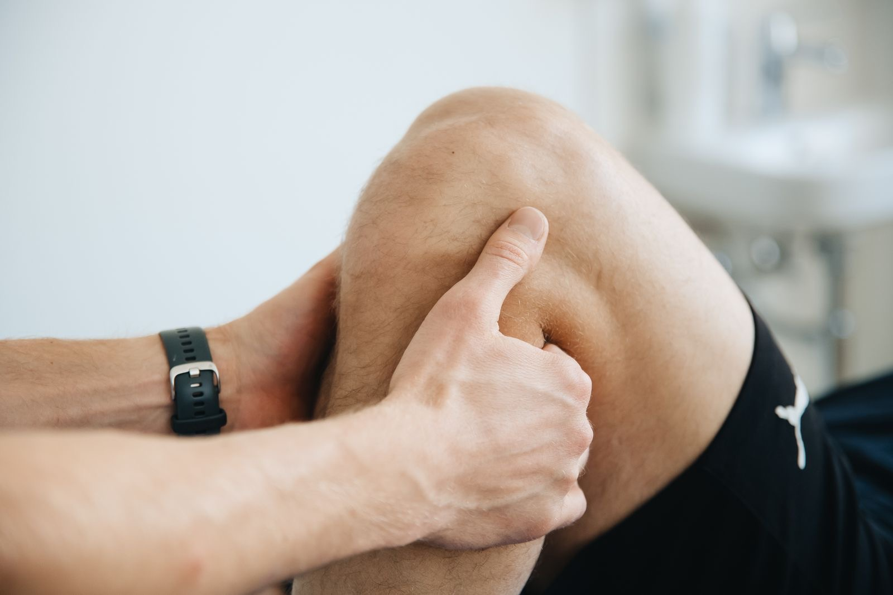

Lesión de ligamento cruzado
Rotura parcial o total del ligamento cruzado anterior (LCA), frecuente en deportes de giro e impacto, con inestabilidad y dolor.

La rodilla soporta gran parte del peso corporal y es fundamental para caminar, correr y saltar. Sus ligamentos, meniscos y tendones están muy expuestos a las lesiones deportivas.
Rotura parcial o total del ligamento cruzado anterior (LCA), frecuente en deportes de giro e impacto, con inestabilidad y dolor.
Daño en los meniscos, los amortiguadores de la rodilla, que causa dolor, bloqueo y dificultad para flexionar o extender.
Inflamación del tendón rotuliano por sobreuso ('rodilla del saltador'), con dolor bajo la rótula al correr, saltar o subir escaleras.

Tecnología, ciencia y medicina para evitar la cirugía
En SINERGIA MED tratamos las lesiones de rodilla combinando una valoración médica integral con tecnología de vanguardia y terapias avanzadas, en protocolos personalizados que buscan una recuperación rápida, segura y sin necesidad de cirugía en la mayoría de los casos.
Agenda tu valoración en SINERGIA MED, el primer Medical Biohacking Center de Ambato.
Agenda tu cita